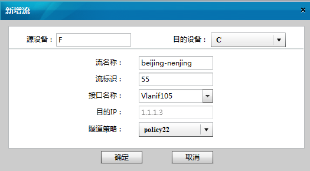

增加流
操作步骤
进入“流定义”对话框。在“选择源设备”列表里选择新建VLL的源设备。
点击“增加”按钮。
弹出“新增流”对话框。

选择目的设备、接口名称以及对应的隧道策略。然后按照下面说明填写其他文本框。
表1
填写对象及取值说明
填写对象
取值说明
流名称
字符串形式，不支持空格，区分大小写，长度范围是1～31。
流标识
十进制整数形式，取值范围是1～4294967295。
点击“确定”提交配置。
父主题：
定义流
华为专有和保密信息
版权所有 © 华为技术有限公司